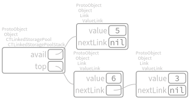

Storage pools¶
The Knuth’s description of linked allocation begins at page 254 of [Knu97], in particular the citation
“But even more importantly, there is often an implicit gain in storage by the linked memory approach, since tables can overlap, sharing common parts; […] The usefulness of linked memory is predicated on the fact that in the large majority of applications we want to walk through lists sequentially, not randomly. […] The linked scheme lends itself immediately to more intricate structures that simple linear lists. We can have a variable number of variable-size lists; any node of the list may be a starting point for another list; the nodes may simultaneously be linked together in several orders corresponding to different lists; and so on.”
—Donald E. Knuth
shows the importance of this subject. We start with the mechanism that supplies space for a new node, by the class
Object subclass: #CTLinkedStoragePool
instanceVariableNames: 'avail'
classVariableNames: ''
package: 'Containers-LinkedStoragePool'
which implements both operation (4),
"CTLinkedStoragePool, protocol initialization"
allocateOrReuseLink
^ avail
ifNil: [ self newLink ]
ifNotNil: [ avail yourself: [ avail := avail nextLink ] ]
where
"CTLinkedStoragePool, protocol initialization"
newLink
^ ValueLink new
and operation (5)
"CTLinkedStoragePool, protocol initialization"
releaseLink: aValueLink
aValueLink nextLink: avail.
avail := aValueLink
allow us to call storage pool the set of all nodes that can be allocated according to these messages.
Stack pool¶
"CTLinkedStoragePoolTest, protocol tests"
testEmptyStack
^ self exportSlotsGraphOf: CTLinkedStoragePoolStack new

"CTLinkedStoragePoolTest, protocol tests"
testSomePushesThenPopsOnStack
| stack |
stack := CTLinkedStoragePoolStack new
push: 3;
push: 4;
pop;
pop;
push: 5;
yourself.
^ self exportSlotsGraphOf: stack
